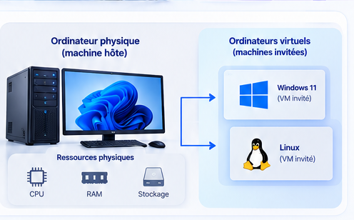
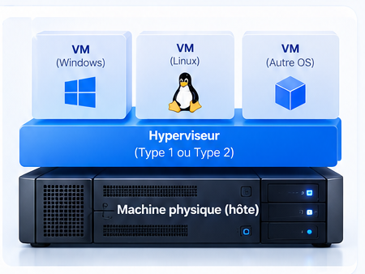
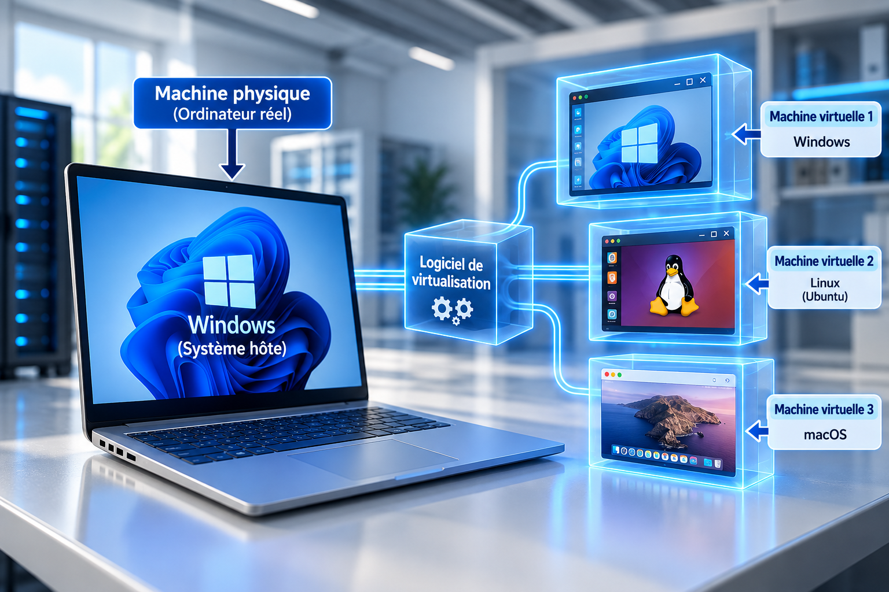
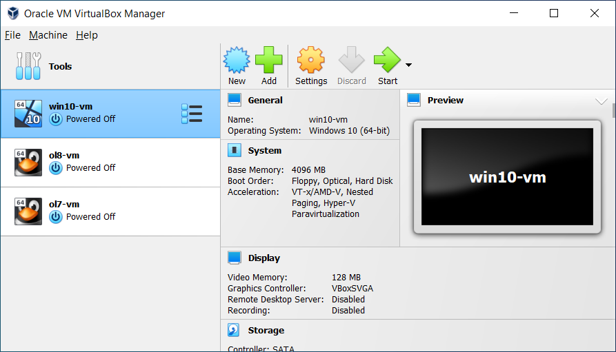
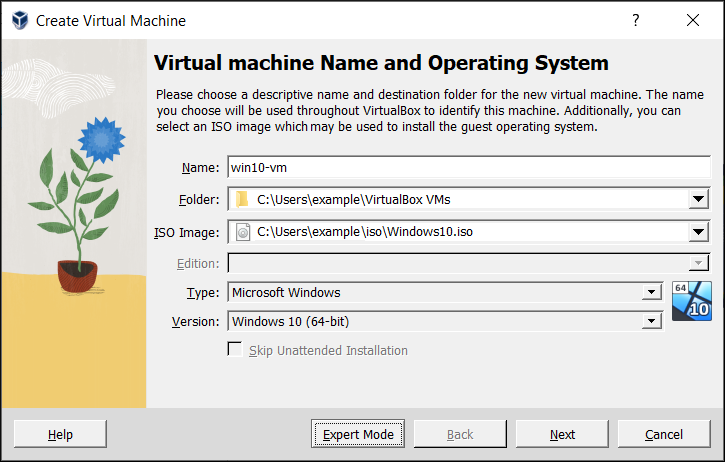

Introduction à la virtualisation
Comprendre le principe de la virtualisation, le rôle d’un hyperviseur et le fonctionnement d’une machine virtuelle avant de créer et d’utiliser un environnement virtualisé.
1. Qu’est-ce que la virtualisation ?
Définition
La virtualisation est une technique permettant de créer un environnement informatique simulé à l’intérieur d’un ordinateur physique. Cet environnement peut se comporter comme un ordinateur indépendant disposant de son propre processeur virtuel, de sa mémoire, de son stockage et de ses périphériques virtuels.
Grâce à la virtualisation, un même ordinateur physique peut exécuter plusieurs environnements isolés sans nécessiter une machine physique distincte pour chacun.
Exemple
Un ordinateur sous Windows peut exécuter une machine virtuelle contenant Ubuntu Linux. L’étudiant peut alors manipuler Linux dans une fenêtre sans remplacer le système Windows installé sur l’ordinateur.

2. Machine physique et machine virtuelle
Machine physique
Une machine physique est l’ordinateur réel : processeur, mémoire RAM, SSD ou HDD, carte réseau et autres composants matériels.
Machine virtuelle
Une machine virtuelle, souvent abrégée VM pour Virtual Machine, est un ordinateur simulé par logiciel. Elle possède une configuration virtuelle qui lui est propre.
| Élément | Machine physique | Machine virtuelle |
|---|---|---|
| Processeur | CPU physique | Processeur(s) virtuel(s) / vCPU |
| Mémoire | RAM installée | Quantité de RAM attribuée à la VM |
| Stockage | SSD/HDD réel | Disque virtuel stocké sous forme de fichier(s) |
| Réseau | Carte réseau physique | Carte réseau virtuelle |
| Système | Système installé sur la machine réelle | Système installé dans la VM |
3. Pourquoi utiliser la virtualisation ?
La virtualisation permet de créer des environnements séparés sur une même machine. Elle est particulièrement utile pour l’apprentissage, les tests, le développement, l’administration et certains scénarios de déploiement.
| Utilisation | Exemple |
|---|---|
| Apprentissage | Installer Linux dans une VM pour pratiquer les commandes sans modifier le système principal. |
| Tests | Tester une configuration ou une application dans un environnement isolé. |
| Développement | Créer différents environnements pour tester un logiciel. |
| Administration | Reproduire un environnement de laboratoire comprenant plusieurs systèmes. |
| Isolation | Limiter les effets d’une mauvaise configuration au système invité plutôt qu’au poste principal. |
4. Le rôle de l’hyperviseur
Définition
Un hyperviseur est la couche logicielle qui permet de créer, configurer, exécuter et gérer des machines virtuelles. Il organise l’accès des VM aux ressources de la machine physique.
Lorsque plusieurs VM fonctionnent sur un même ordinateur, l’hyperviseur contribue à répartir les ressources disponibles entre les différents environnements virtuels.

Exemples
Parmi les solutions de virtualisation couramment rencontrées figurent Hyper-V, Oracle VirtualBox et les solutions de virtualisation de VMware.
Télécharger ou activer un logiciel de virtualisation
Pour réaliser les manipulations de cette leçon, utilisez de préférence le site officiel de l’éditeur. Le choix dépend du système hôte utilisé et des exigences du laboratoire.
| Solution | Systèmes hôtes / usage | Accès officiel |
|---|---|---|
| Oracle VirtualBox | Solution de virtualisation de bureau disponible pour plusieurs plateformes. Elle convient bien aux laboratoires et à la création de VM Windows ou Linux. | Télécharger VirtualBox |
| VMware Workstation Pro | Hyperviseur de bureau destiné notamment aux hôtes Windows et Linux. Le téléchargement actuel passe par le portail Broadcom. | Télécharger VMware Workstation Pro |
| VMware Fusion | Solution VMware destinée aux ordinateurs Mac. | Accéder à VMware Fusion |
| Microsoft Hyper-V | Hyper-V est une fonctionnalité intégrée aux éditions Windows compatibles : il ne se télécharge pas comme une application indépendante. | Activer Hyper-V — Microsoft |
5. Hyperviseur de type 1 et de type 2
Les hyperviseurs sont souvent présentés en deux grandes catégories selon leur position par rapport au matériel et au système d’exploitation.
| Type | Principe | Contexte général |
|---|---|---|
| Type 1 | L’hyperviseur fonctionne directement au niveau de la plateforme matérielle, sans dépendre d’un système d’exploitation hôte classique pour exécuter les VM. | Serveurs, infrastructures de virtualisation et environnements professionnels. |
| Type 2 | Le logiciel de virtualisation fonctionne au-dessus d’un système d’exploitation hôte. | Postes personnels, enseignement, laboratoires et tests. |
Exemple conceptuel
Dans un laboratoire, un étudiant peut lancer un logiciel de virtualisation depuis son système Windows ou macOS, puis démarrer Ubuntu dans une VM. Cette organisation correspond au modèle couramment associé à un hyperviseur hébergé.
6. Système hôte et système invité
Système hôte
Le système hôte (host) désigne, dans une configuration de virtualisation hébergée, le système d’exploitation principal sur lequel le logiciel de virtualisation est exécuté.
Système invité
Le système invité (guest) est le système d’exploitation installé et exécuté à l’intérieur de la machine virtuelle.

7. Les ressources d’une machine virtuelle
Lors de la création d’une VM, l’administrateur attribue une partie des ressources disponibles sur l’ordinateur physique. Ces ressources doivent être suffisantes pour le système invité sans empêcher le système hôte de fonctionner correctement.
| Ressource virtuelle | Rôle | Point d’attention |
|---|---|---|
| vCPU | Capacité de traitement présentée au système invité. | Ne pas attribuer les ressources sans tenir compte des besoins de l’hôte. |
| RAM | Mémoire disponible pour le système invité. | Une VM trop gourmande peut réduire les ressources disponibles pour l’hôte. |
| Disque virtuel | Stockage utilisé par le système et les fichiers de la VM. | Le disque physique doit disposer de suffisamment d’espace libre. |
| Carte réseau virtuelle | Permet à la VM de communiquer selon le mode réseau configuré. | Le comportement dépend du mode de réseau virtuel choisi. |
| Affichage / périphériques | Fournissent à l’invité les interfaces virtuelles nécessaires. | Certaines fonctions dépendent de l’hyperviseur et de sa configuration. |
Exemple de raisonnement
Un ordinateur possède 16 Go de RAM. Attribuer 14 Go à une VM laisserait très peu de mémoire au système hôte et aux autres applications. L’allocation doit donc tenir compte des besoins du système invité et de ceux de la machine hôte.
8. Le disque virtuel
Définition
Un disque virtuel est un stockage présenté à la VM comme s’il s’agissait d’un disque réel. Pour l’ordinateur hôte, il est généralement représenté par un ou plusieurs fichiers gérés par le logiciel de virtualisation.
Allocation dynamique et taille fixe
Selon l’hyperviseur et le format utilisé, un disque virtuel peut être configuré pour occuper progressivement de l’espace jusqu’à une limite définie ou pour réserver plus directement la capacité prévue.
9. Réseau d’une machine virtuelle
Une VM peut utiliser une carte réseau virtuelle. L’hyperviseur relie cette interface virtuelle au réseau selon un mode configuré par l’administrateur.
Modes courants
| Mode | Principe général |
|---|---|
| NAT | La VM utilise la connectivité de l’hôte par l’intermédiaire du mécanisme de traduction fourni par l’environnement virtuel. |
| Accès par pont / Bridged | La VM est reliée plus directement au réseau auquel l’hôte est connecté et peut y apparaître comme une machine distincte selon la configuration. |
| Réseau privé / Host-only | Permet de créer un réseau limité entre l’hôte et certaines VM, sans fournir nécessairement un accès direct au réseau externe. |
10. Image ISO et lecteur virtuel
Une VM peut démarrer à partir d’une image ISO montée dans un lecteur optique virtuel. Cela permet d’installer un système d’exploitation sans graver de DVD ni nécessairement créer une clé USB physique.
Le processus conceptuel est le suivant : créer la VM, lui attribuer des ressources, associer l’image ISO au lecteur virtuel, démarrer la VM, puis lancer l’installation du système invité.
11. Instantané (snapshot) et état d’une VM
Définition
Un instantané ou snapshot enregistre un état de référence d’une machine virtuelle afin de pouvoir revenir à cet état selon les possibilités offertes par l’hyperviseur.
Cette fonction est particulièrement utile dans un laboratoire : avant une manipulation risquée, l’étudiant peut créer un point de retour et restaurer l’environnement si l’exercice provoque une mauvaise configuration.
12. Avantages et limites de la virtualisation
| Avantages | Limites / contraintes |
|---|---|
| Plusieurs environnements sur une même machine. | Les VM partagent les ressources physiques disponibles. |
| Environnement pratique pour les tests et l’apprentissage. | Une machine hôte insuffisamment équipée limite les performances. |
| Isolation entre différents environnements de travail. | La configuration réseau, le stockage et les ressources doivent être planifiés. |
| Création, suppression et duplication d’environnements facilitée. | Certaines charges de travail ou certains périphériques peuvent nécessiter une configuration plus avancée. |
| Possibilité d’utiliser des snapshots selon l’hyperviseur. | Un snapshot n’est pas une sauvegarde complète à lui seul. |
13. Préparer la création d’une machine virtuelle
Avant de créer une VM, il faut vérifier que l’ordinateur hôte dispose des ressources nécessaires et que la virtualisation matérielle requise par la solution choisie est disponible et activée lorsque cela est nécessaire.
Checklist de préparation
- Identifier le système invité à installer.
- Vérifier les exigences du système invité.
- Vérifier les ressources disponibles sur l’hôte.
- Prévoir le nombre de vCPU.
- Déterminer la quantité de RAM à attribuer.
- Prévoir la capacité du disque virtuel.
- Choisir le mode réseau approprié.
- Préparer l’image ISO d’installation.
- Vérifier que l’hôte conserve suffisamment de ressources pour fonctionner.
14. Manipulation guidée — créer une VM avec Oracle VirtualBox
Cette manipulation applique concrètement les notions étudiées dans la leçon. L’objectif est d’utiliser Oracle VirtualBox pour préparer une machine virtuelle et lui associer une image ISO d’installation.
Étape 1 — Ouvrir Oracle VirtualBox
Après l’installation de VirtualBox, lancez Oracle VM VirtualBox Manager. La fenêtre principale permet de consulter les machines virtuelles existantes et d’accéder aux principales commandes de gestion.

- New : créer une nouvelle VM;
- Add : ajouter une VM déjà existante;
- Settings : modifier la configuration de la VM sélectionnée;
- Start : démarrer la machine virtuelle sélectionnée;
- le panneau central affiche notamment la mémoire, l’ordre de démarrage, l’affichage et le stockage de la VM.
Étape 2 — Commencer la création de la VM
Cliquez sur New. L’assistant Create Virtual Machine s’ouvre. Cette première étape sert à identifier la VM et à sélectionner le système d’exploitation qui sera installé.

Étape 3 — Donner un nom à la machine virtuelle
Dans le champ Name, saisissez un nom explicite. Dans la capture, la machine est nommée win10-vm. Un nom clair facilite l’identification lorsque plusieurs VM sont utilisées dans le laboratoire.
ubuntu-lab, win11-test ou linux-admin.Étape 4 — Choisir le dossier de la VM
Le champ Folder indique l’emplacement où VirtualBox conservera les fichiers associés à la machine virtuelle. Vérifiez que le disque physique choisi possède suffisamment d’espace libre pour le disque virtuel et les autres fichiers de la VM.
Étape 5 — Sélectionner l’image ISO
Dans ISO Image, sélectionnez l’image ISO du système à installer. Dans la capture, un fichier Windows10.iso est associé à la nouvelle VM.
L’image ISO joue ici le rôle de support d’installation virtuel. Elle sera utilisée au démarrage de la VM pour installer le système invité, de la même manière qu’un support USB amorçable peut être utilisé sur une machine physique.
Étape 6 — Vérifier le type et la version du système
VirtualBox peut identifier ou proposer le Type et la Version du système invité à partir des informations fournies. Dans l’exemple illustré, le type est Microsoft Windows et la version sélectionnée est Windows 10 (64-bit).
Avant de continuer, vérifiez que ces informations correspondent bien au système que vous souhaitez installer.
Étape 7 — Installation automatique ou installation manuelle
L’option Skip Unattended Installation visible dans l’assistant permet de choisir de ne pas utiliser l’installation automatisée proposée par VirtualBox. Dans un contexte pédagogique, une installation manuelle peut être utile lorsque l’objectif est d’observer et de réaliser soi-même les différentes étapes de l’installation du système d’exploitation.
Étape 8 — Continuer la configuration
Cliquez sur Next pour poursuivre. Les écrans suivants permettent, selon la version de VirtualBox et le mode choisi, de définir les ressources et le stockage de la VM.
| Paramètre | Question à se poser |
|---|---|
| RAM | Quelle quantité peut être attribuée sans priver le système hôte de la mémoire dont il a besoin ? |
| vCPU | Combien de processeurs virtuels sont nécessaires pour le système invité ? |
| Disque virtuel | Quelle capacité faut-il prévoir pour le système, les applications et les travaux du laboratoire ? |
| Réseau | La VM doit-elle simplement accéder à Internet ou être directement visible sur le réseau du laboratoire ? |
Étape 9 — Vérifier la machine créée
Une fois la création terminée, la nouvelle VM apparaît dans la liste de VirtualBox Manager. Sélectionnez-la et vérifiez sa configuration avant de la démarrer : mémoire, processeurs, stockage, image ISO et réseau.
Dans la première capture, la VM win10-vm est arrêtée (Powered Off) et sa configuration générale est visible dans le panneau de droite. Le bouton Start permettra ensuite de la démarrer.
Étape 10 — Démarrer la VM
Cliquez sur Start. Si l’image ISO et l’ordre de démarrage sont correctement configurés, la machine virtuelle démarre sur le support virtuel et l’installateur du système d’exploitation peut être lancé.
Mise en situation — Laboratoire Windows/Linux
Vous disposez d’un ordinateur hôte équipé de 16 Go de RAM, d’un processeur multicœur et de 250 Go d’espace libre. Vous devez conserver le système principal et créer un environnement Linux pour les travaux pratiques.
- Pourquoi la virtualisation est-elle adaptée à ce scénario ?
- Quel sera le système hôte et quel sera le système invité ?
- Quelles ressources devez-vous attribuer à la VM ?
- Pourquoi ne faut-il pas attribuer toutes les ressources de l’ordinateur à la VM ?
- Quel rôle jouera l’image ISO ?
- Quel mode réseau pourriez-vous choisir si la VM doit simplement accéder à Internet via l’hôte ?
- À quel moment un snapshot pourrait-il être utile ?
Activité de synthèse
Concevez la configuration d’une machine virtuelle destinée à un laboratoire d’administration système. Votre proposition doit identifier :
- le système hôte;
- le système invité;
- l’hyperviseur envisagé;
- le nombre de vCPU;
- la quantité de RAM;
- la capacité et le type d’allocation du disque virtuel;
- le mode réseau;
- l’image ISO à utiliser;
- l’utilisation éventuelle d’un snapshot;
- les ressources qui doivent rester disponibles pour l’hôte.
Mini quiz — Introduction à la virtualisation
Vérifiez votre compréhension des notions essentielles de la leçon. Sélectionnez une réponse pour chaque question, puis cliquez sur Corriger le quiz.